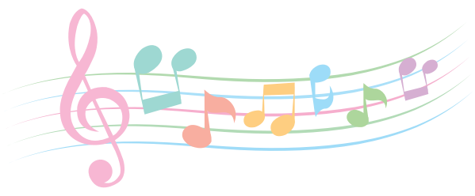
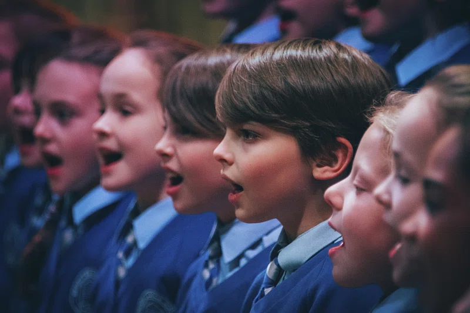
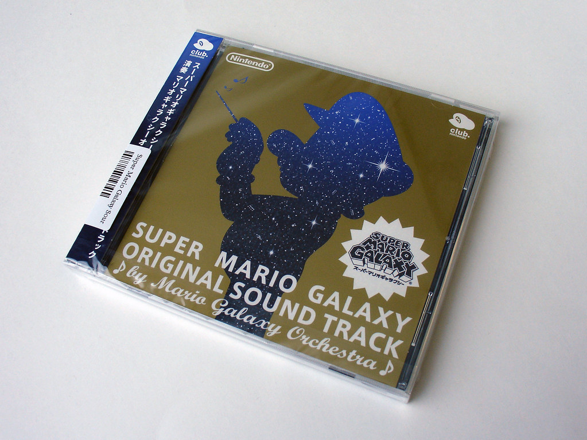
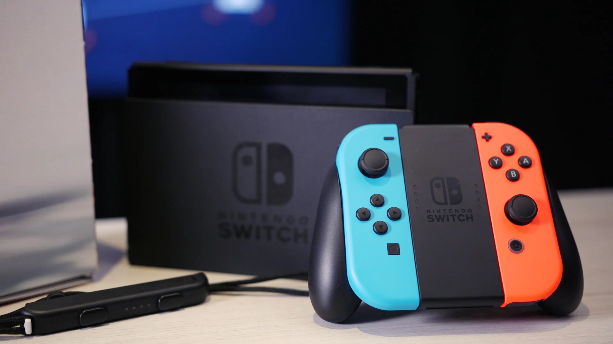

I'm a pretty weird guy, so here is a wonky list of some of my interesting tastes.

I LOVE Music. I play piano, I sing in a choir, and I listen to it on a regular basis.
On piano, I play a variety of songs, mainly from my piano book or scores of video games and movies. I've played piano since 2016 and have loved it ever since.

I sing with EYV Choirs, a wonderful choir where I have expanded my knowledge of music greatly and made great friends. Next July, we're taking a tour to Europe through Frankfurt, Prague, Vienna, and Salzburg. We mainly sing classical type music and obscure carols for our Christmas concert.

The music I mainly listen to is from video games, such as Super Mario and the Legend of Zelda. The instrumental themes in video games really appeal to me because they bring out a sense of environment and emotion that is very important with music. Plus, given that this music is designed to be played in the background of games for hours on end, it takes a long while to get bored of one particular song. Some of my favourites include:
I spend a majority of my free time either watching or playing video games. Here are some of my favourite individual games and franchises.

I love to read! I reread a lot of books and remember much of most of them, so do not challenge me to Harry Potter Trivia. Some of my favourite books include: